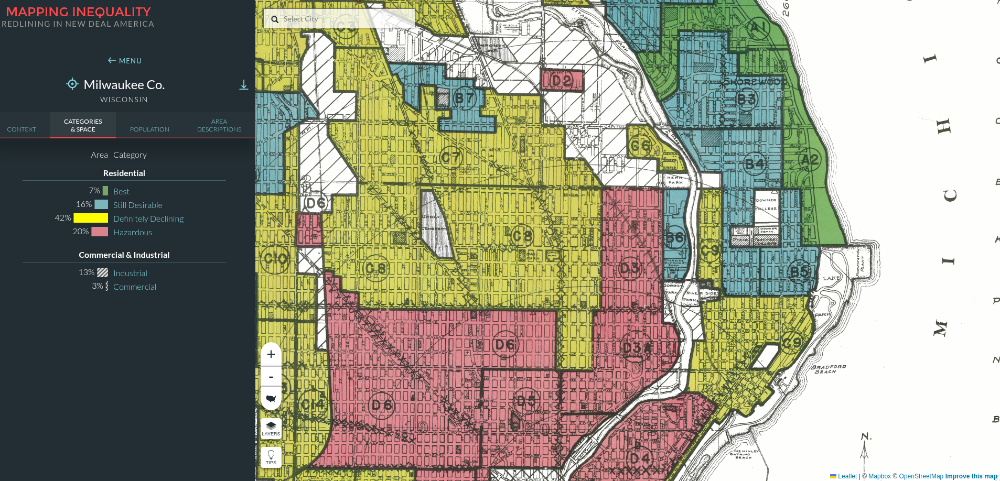

Featured Artifact: HOLC Grade Boundaries and Present-Day Median Income

What This Map Shows
The spatial correspondence between 1937 HOLC grades and 2020 income is striking. Neighborhoods graded A and B — described in the original HOLC assessor notes as "homogeneous," "American," and "stable" — cluster in areas that today report median household incomes above $65,000. Neighborhoods graded C and D — described as "declining," "infiltrated," or "hazardous," with explicit references to immigrant and Black residents — cluster in areas that today report median household incomes below $40,000. The boundaries visible in the 1937 maps are legible, in many cases, in the 2020 data.
What This Map Cannot Show
Correlation is not causation. This map does not demonstrate that HOLC grades caused present-day income disparities — only that the two spatial patterns are similar. The map cannot account for the many intervening variables between 1937 and 2020: urban renewal, highway construction, selective municipal investment, white flight, and others. It also cannot show what the city looked like before 1937, or whether the HOLC grades reflected existing inequality rather than creating new forms of it. Those are questions the map raises; they are not questions it answers.
How This Artifact Was Produced
The HOLC boundary data was downloaded from the Mapping Inequality project at the University of Richmond. The census data was retrieved via the Census Bureau API using Python. Both datasets were joined on census tract FIPS codes and mapped using GeoPandas. The map was exported as a PNG and is a static image — it does not update automatically as new census data becomes available.